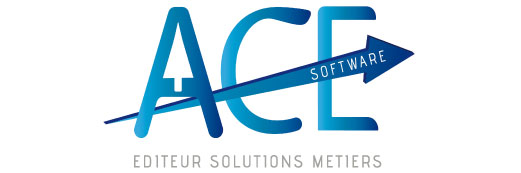
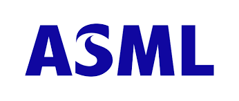

Accueil
Sommaire
CV
Presentation personnellePresentation entreprise
Presentation de l'entreprise et de son fonctionnementMissions
Tâches au sein de l'entrepriseFormation
Domaines appris au sein de mon BTSProjets
Projets réalisés au sein du BTS, de l'entreprise et du domicileVeille tehnologique
Etudes de l'actualité des nouvelles technologiesTableau de synthèse
Tableau de synthèse des réalisations professionnelles
CV
Etudiant en deuxième année de BTS informatique, actuellement à la recherche d'une alternance. Ayant par le passé effectué une formation et un stage au sein d'un IUT, je possède des expériences dans le domaine de la programmation et de l'administration système.
Parcours professionnel et projets
Sept 2022 – Juin 2022 : Développeur chez ACEsoftware. Développeur assistant en windev et helpdeskMars 2020 – Aout 2020 : Observatoire de la Côte d’Azur. Interfaçage Python d’un logiciel de simulation en C++
Institut Universitaire de Technologie - Nice : système de ventes en ligne en Php et PhpMyAdmin.
Formations:
2022 - 2024 BTS SIO, Lycée Estienne d’OrvesSept.2018 – Juil.2020 Institut Universitaire de Technologique de Nice, Fabron
Juil.2014 Baccalauréat général – Scientifique
Lycée Amiral de Grasse Sept. 2011 – Juil.2014 CNED – Préparation au baccalauréat
Projet professionnel
Mon projet professionnel est à terme de devenir développeur. Continuer mes études pour intégrer une école d'ingénieur est une ambition. Je souhaite via l’alternance participer au développement de l’entreprise, en évoluant et améliorant mes compétences, en partageant mes connaissances, mon ambition et ma passion. L'électronique étant un domaine m'intéressant tout particulièrement, j'envisage d'orienter mon étude dans la programmation embarquée.Présentation entreprise
L'entreprise a été créée en 1998 par Brice Roux, elle est spécialisée dans le développement d'ERP (logiciel de gestion intégré). AceSoftware offre aussi des services de consultant dans le domaine de la comptabilité. Elle compte environ 700 clients.
Il s'agit d'une SARL implantée à Sophia Antipolis et possède une antenne à Paris. Elle emploie une dizaine de salariés.
L'entreprise se concentre sur la réalisation d'un ERP. L'ERP (Enterprise Resource Planning) est un logiciel dédié aux entreprises afin de contrôler un ensemble de tâches liées à son activité. Il permet de gérer les opérations liées à la gestion financière, à la production, aux ressources humaines, ainsi qu'aux ventes. L’ERP concentre un ensemble d'outils spécialisés et unifiés pour les entreprises, répondant à des enjeux d'amélioration des ressources et des coûts. Il agit aussi comme une base de données recensant toutes les informations relatives aux employées.
Missions
Mon insertion au sein de l'entreprise s'est faite sous la houlette du responsable de la paie. Celui-ci m'a initié aux termes techniques relatifs à la paie mais aussi au fonctionnement général de l'entreprise et son environnement. J'ai notamment été formé aux divers outils informatiques, comme par exemple AnyDesk afin de pouvoir prendre le contrôle du poste d'un client pour résoudre un problème ou faire une démonstration. J'ai aussi été informé de toutes les caractéristiques relatives aux clients.
Mon travail s'est décomposé en deux grandes parties: la première, le matin, consistait en du helpdesk sur la paie et la deuxième partie concernait la programmation informatique.
Chaque matin, j'étais chargé de traiter les questions d'une quinzaine de clients, aussi bien sur des sujets relatifs à l'utilisation du logiciel que certains problèmes et autres questions relatives à la paie. Cela se faisait par un système de récupération et de traitement des mails intégré au sein du logiciel ERP de l'entreprise.
Généralement durant l'après-midi, j'étais chargé de tracer et de corriger des problèmes soulevés par certains utilisateurs.
Formation
Compétences
Au cours de ma formation informatique, y compris à l'IUT, j'ai abordé plusieurs thémathiques en lien avec le réseau. J'ai notamment appris à mettre en place des infrastructures réseaux grâce au logiciel PacketTracer. Parmis ces infrastructures, j'ai pu voir plusieurs cas d'école: - La DMZ, un sous-réseau séparé du réseau local permettant l'accès à une partie prédéterminée du réseau. - L'attaque de l'homme du milieu, qui a pour but d'intercepter les connections entre deux parties - HSRP, un protocole réseau permettant d'assurer la disponibilité de la passerelle en cas d'une panne d'un routeur - Le protocole DHCP, permettant l'attribution automatique d'adresses IP - Le routage inter-vlan
Projet GSB
Contexte : GSB a besoin d'équipements et d'un réseau social d'entreprise pour permettre aux visiteurs de rester en communication avec le siège social. Nous avons notamment natté le réseau afin de faire communiquer avec l'extérieur les équipements du switch SW-GSB-1 et une procédure sur le NAT a été faite. Lors du projet GSB, j'ai été chargé de la configuration du serveur de mise à jour Windows ainsi que le serveur de backup avec RedoBackup.
Documentation technique
Procedure d'installation du serveur WSUS
Procedure d'installation de RedoBackup
Projets
Mes projets se déclinent en deux types: ceux effectués en entreprise et ceux effectués au sein de ma formation lors du projet GSB.
Entreprise
Lors de mon embauche à ACEsoftware, j'ai été amené à réaliser plusieurs projets. Parmi eux, l'amélioration de l'interface de la paie avec l'ajout de certaines fonctionnalités, notamment le fait de rendre le logiciel compatible en fonction des départements ou encore le prise en compte de paramètres supplémentaire. Certains projets ont aussi portés sur l'interface web. J'ai ainsi été charge de faire des mises à jour concernant les formulaires du site de l'entreprise. Lors de ma deuxième année, qui s'est déroulée au sein de l'entreprise familiale, mes tâches se portaient essentiellement sur des modifications du site web.
Veille technologique
Qu'est-ce que la veille technologique ?
La veille permet de surveiller les évolutions techniques et technologiques dans un domaine en particulier. La veille technologique comprend notamment l'actualisation des connaissances, la collecte, l'échange et la diffusion d’informations permettant d’anticiper et de s’informer sur des évolutions en matière de recherche, développement, brevet, innovation ... etc…. Cela permet ainsi de s'adapter à ces changements et de maintenir un certain niveau de concurrence.Les outils de ma veille
J'ai effectué ma veille technologique grâce à un agrégateur de flux RSS, un moteur de recherche et les réseaux sociaux tels que Youtube.Sujet de ma veille
Pour cette veille technologique, j'ai décidé de me pencher sur les semi-conducteurs. Les puces sont en effet parties intégrante de la conception des équipements réseaux. Notre veille technologie porte sur les machine photolitographiques. La photolithographie est l'ensemble des opérations permettant de transférer une image vers un substrat, comme le silicium. Cette technique est par conséquent très utilisée dans l'industrie du semi-conducteur. Les motifs de l'image ainsi transférée deviendront par la suite les différentes zones des composants électroniques.Les technologies de la photolithographie ont donc un impact considérable dans l'industrie informatique. Parmi les grands fabricants, nous avons ASML, Canon et Nikon. ASML, une entreprise néerlandaise est aujourd'hui le leader dans cette technologie et son principal client est le Taiwanais TSMC. 
ASML est capable de produire des machines avec une finesse de gravure tel que le nombre de transistors possibles sur un circuit augmente considérablement. A tel point que cela a un impact sur le plan géopolitique. En effet, les Etats-Unis ont fait pression sur les Pays-Bas afin que ASML n'ai pas le droit de vendre ses machines à la Chine.
Sources
https://www.asml.com/en
https://www.investopedia.com/asml-7971466
https://www.youtube.com/watch?v=VoScfbDMqis